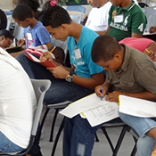
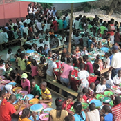

Haiti/Port-Au-Prince – food/nutrition
program
|
|
In January 2010, a 7.1 magnitude earthquake devastated Haiti, even
then
considered the poorest country in the Western Hemisphere. More than
200,000 people died, more than 180,000 homes and 5,000 schools were
damaged or destroyed.
|
|
More than 1.5 million people were left homeless. Today, the rebuild
of the
nation is under way and although the progress has been slow and
painful at
times, there's no denying the resilience of its people. In January
2010, a 7.1
magnitude earthquake devastated Haiti, even then considered the
poorest
country in the Western Hemisphere. More than 200,000 people died,
more
than 180,000 homes and 5,000 schools were damaged or destroyed. More
than 1.5 million people were left homeless.
|
|
Today, the rebuild of the nation is under way and although the
progress has
been slow and painful at times, there's no denying the resilience of
its
people. More than 1.5 million people were left homeless. Today, the
rebuild
of the nation is under way and although the progress has been slow and pain-
ful at times, there's no denying the resilience of its people
|
|
In January 2010, a 7.1 magnitude earthquake devastated Haiti, even
then
considered the poorest country in the Western Hemisphere. More than
200,000 people died, more than 180,000 homes and 5,000 schools were
damaged or destroyed. More than 1.5 million people were left
homeless.
Today, the rebuild of the nation is under way and although the
progress
has been slow and painful at times, there’s no denying the
resilience of its
people.
|
|
Barry White
Support Manager
|
|
P.S.: Today the rebuild of the nation is under way and although
the progress
has been slow
|
|
|

6£ for Kids in Greenland
|

10£ for Kids in Ukraine
|
|
|
World Compassion Fellowship, Third Street 64/1, London, CA
94103. If you want to contact us don't reply this message!
Email us to info@wcf.org
or call us
0169 77
04587
(USA),
or visit our site www.wcf.org
Unsubscribe
|
|
|